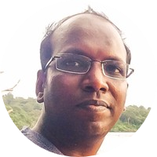
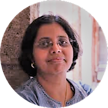

INO-WEEK at VIGYAM SAMAGAM
Particle physics and early universe (Bengali)
Prof. Naba K Mondal
Tuesday, 3rd December 2019 at 10.00 AM | Vigyan Samagam, Science City, Kolkata
Particle physics deals with the structure of matter at the smallest scale, while cosmology studies the entire universe on the largest scales. Although these two diverse fields are separated by the scales of the objects they study, they need each other to explain the evolution of our universe just after it got created 13.7 billion years ago. In this talk, using the knowledge we acquired at particle physics laboratories, I plan to explore the universe when it was only a fraction of a second old.
Register here to attend this talk
The invisible universe
Prof. Pijushpani Bhattacharjee
Tuesday, 3rd December 2019 at 11.30 AM | Vigyan Samagam, Science City, Kolkata
A variety of astronomical observations indicate that objects such as planets, stars, galaxies, etc. that we "see" in the Universe account for only about 5% of the total matter and energy content of the Universe. The other 95% is made up of some unknown form of invisible matter called "Dark Matter" (about 25%) and an unknown form of energy called "Dark Energy" (70%). This talk will discuss how scientists have used basic principles of physics to arrive at such an astonishing conclusion about the Universe we inhabit and how they are trying to uncover the mystery of this Invisible Universe.
Register here to attend this talk
Needles in haystack: How do the physicists go after finding them?
Prof. Satyajit Saha
Wednesday, 4th December 2019 at 10.00 AM | Vigyan Samagam, Science City, Kolkata
Rare phenomena, events and processes have always been challenging physicists to question the foundations of physics. Quite often, such intriguing situations can be logically arrived at through physical arguments, large scale observations, theoretical model building, followed by mathematical derivations having different levels of difficulties. These pose challenges to the physicists to prove or disprove them with experimental findings which are often difficult and daunting tasks to accomplish. Many of the Mega Science projects are aimed at such endeavours. A few such examples will be presented in this talk with aim to motivate the young physicists to take up the challenges in future.
Register here to attend this talk
The curious story of neutrino and its mass
Prof. Amitava Raychaudhuri
Wednesday, 4th December 2019 at 11.30 AM | Vigyan Samagam, Science City, Kolkata

Neutrinos, uncharged weakly-interacting fundamental particles, are of three types and were thought to be massless till recently. They have been found to exhibit the unusual feature of oscillating from one type to another as they travel. The way this was observed in the last few decades in a few clever experiments around the world will be highlighted. We discuss how this is a signal for a non-zero mass of the neutrinos. Then, we briefly touch upon a major experiment – the India-based Neutrino Observatory -- that is being set up in India to address some of the open issues. We end with a discussion of why a non-zero mass of the neutrino has important physics implications.
Register here to attend this talk
Neutrino Oscillations
Dr. Deepak Samuel
Thursday, 5th December 2019 at 10.00 AM | Vigyan Samagam, Science City, Kolkata
Repeated on Friday, 6th December 2019 at 10.00 AM

The above equation drives most of the neutrino oscillation experiments worldwide. Nature has fixed some of the parameters in the equation while giving us the liberty to change others. In the context of neutrino oscillations, what are the unknowns, what are the knowns and how do we make the unknowns known, will form the crux of my talk. The talk is aimed at beginners with knowledge of basic mathematics.
Register here to attend this talk
Detectors for high energy physics
Dr. Saikat Biswas
Thursday, 5th December 2019 at 11.30 AM | Vigyan Samagam, Science City, Kolkata
Particle detectors or radiation detectors are used to detect the charged particles and uncharged radiation produced in a high-energy physics (HEP) experiment or in cosmic radiation. Gaseous detectors are the first electrical devices developed for radiation detection. Resistive Plate Chamber (RPC), Gas Electron Multiplier (GEM), Straw tube are some advanced gas filled detectors used in present experiments. In this talk some features and applications of some important gaseous detectors and scintillation detectors used in current HEP experiments will be addressed. The fun and career in detector R&D will also be discussed.
Register here to attend this talk
Probing neutrinos with cool detectors
Prof. Vandana Nanal
Friday, 6th December 2019 at 11.30 AM | Vigyan Samagam, Science City, Kolkata
Repeated on Saturday, 7th December 2019 at 10.00 AM

Neutrinos are very tiny particles, which roam almost freely through the entire universe. Therefore it is very difficult to detect them and study their behaviour. Neutrinos were first discovered through study of atomic nuclei. This talk will give a glimpse of how one can learn about neutrinos by searching for a very rare nuclear decay process that does not emit neutrinos.
Register here to attend this talk